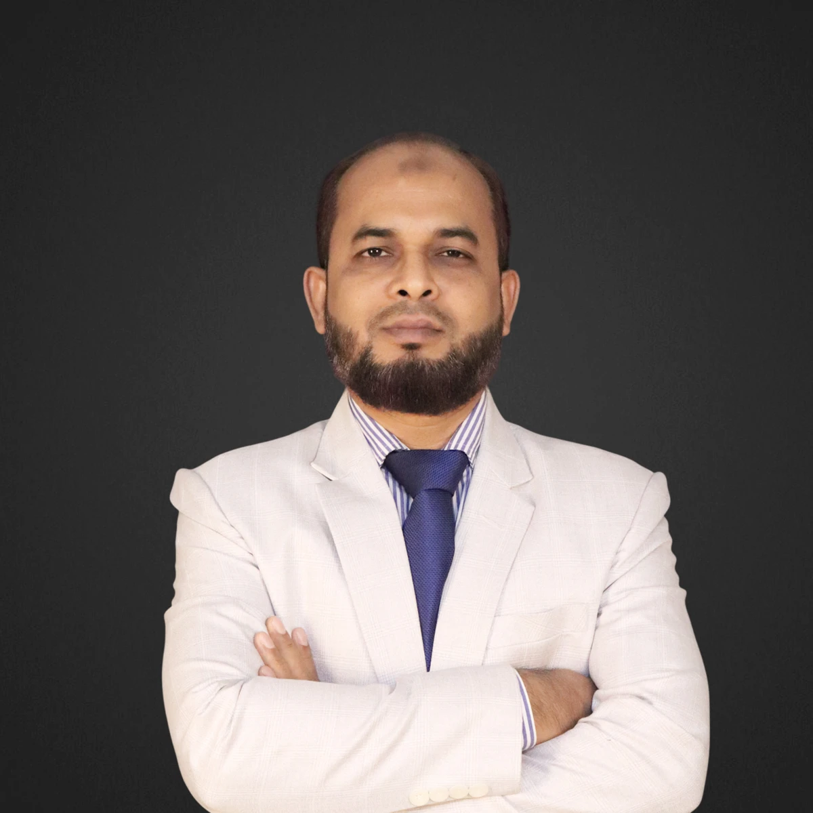
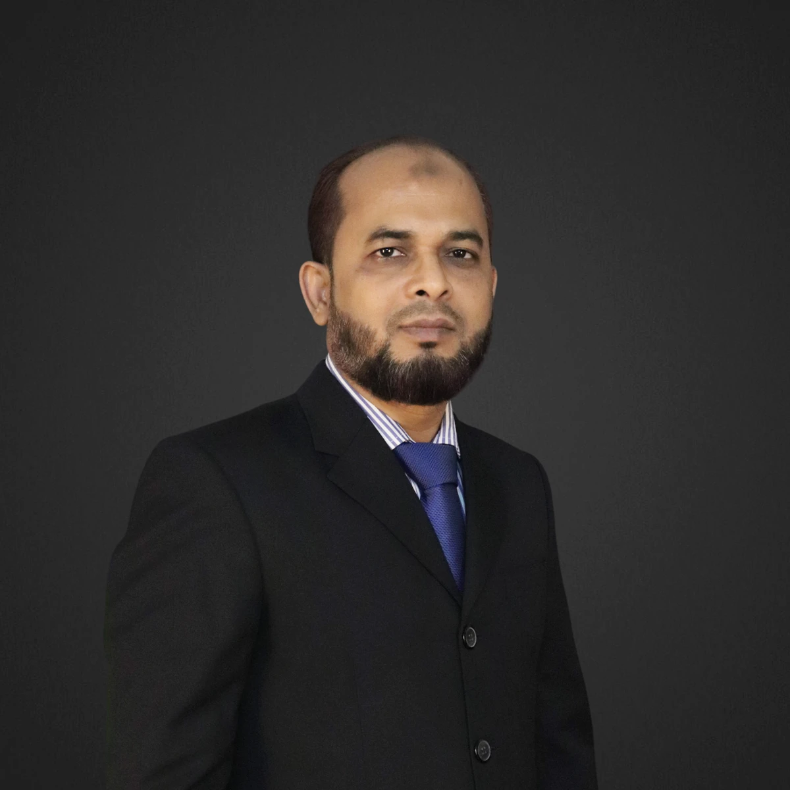
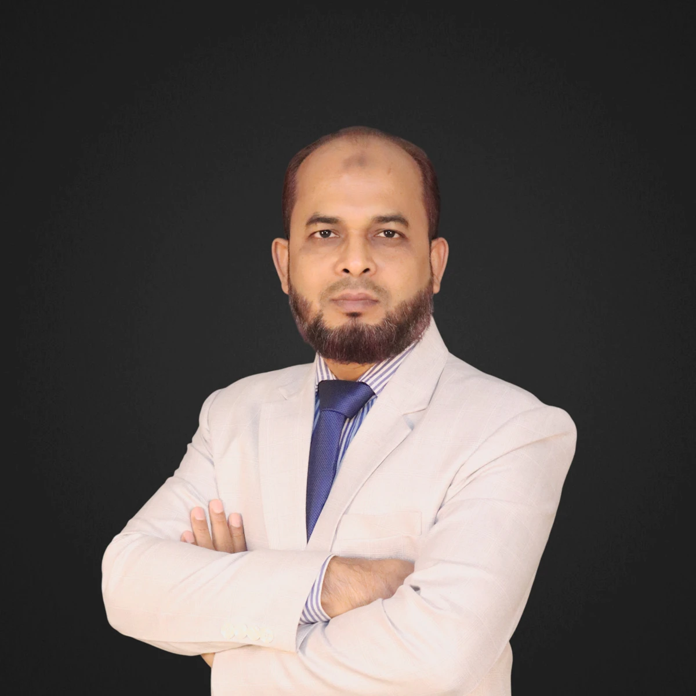

Technical & product
development
Tech-pack review, style feasibility, pattern and specification control, and production-friendly construction.
TECHNICAL PRECISION. PEOPLE LEADERSHIP.
Sheikh Md.
Moshiur Rahman Jewel
Three decades translating apparel design into production-ready products through technical development, fit engineering, and factory collaboration.

Kontoor Brands · Lee Wrangler Asia Ltd.
Years in the apparel industry
First-pass sample approval achieved
Technical professionals led
Factories supported at Alana Group

01 / THE PROFESSIONAL
From the production floor to senior technical roles, my career has been built on understanding how garments work—and how teams make them better.
I bring 30+ years of progressive apparel experience across technical management, product development, fit and quality assurance. Today, I serve as Senior Garments Technician at Kontoor Brands, supporting the Lee and Wrangler brands.
My focus is practical: resolve complex construction challenges, strengthen sample accuracy, and connect buyer expectations with factory execution. Cost optimization and value engineering are central to that work.
02 / AREAS OF EXPERTISE
Connecting product intent, technical accuracy, and consistent factory execution.
Tech-pack review, style feasibility, pattern and specification control, and production-friendly construction.
Fit, PP, TOP and development sample review, supported by clear technical comments and corrective actions.
Root-cause analysis, recurring defect reduction, buyer requirements, and factory technical compliance.
Value engineering, fabric and trim coordination, washing and finishing collaboration, and team capability building.
03 / CAREER JOURNEY
Lee Wrangler Asia Ltd. · Bangladesh Liaison Office
Evaluate fit and development samples, resolve construction challenges, coordinate technical improvements, and support cost optimization with buyers and factory teams.
Bangladesh Liaison Office
Technical experience supporting Lee, Wrangler, Timberland, Napapijri, The North Face, and other apparel lines.
Following the 2019 spin-off, support for Lee and Wrangler continued under Kontoor Brands without interruption in service.
Promoted to Senior Garments Technician in 2012. Managed technical development, sample evaluation, fit solutions, and factory collaboration across multiple buyers, including Mexx, HBC, Target, Meijer, Liz Claiborne, Cato, and Belk.
Led 100+ technical professionals across pattern, sample, and QC functions. Supported 15 factories and 150+ production lines, establishing structured technical control and improving production readiness.
Worked on pants, jackets, and blouses across men’s, women’s, and children’s categories for buyers including Macy’s, Tommy Hilfiger, Gap, and Sears.
Progressed through quality inspection, sewing, supervision, sample making, and sample QC roles, including experience at GK Export Ltd.—building hands-on knowledge of apparel construction and production operations.
04 / SELECTED CONTRIBUTIONS
Achieved through fit and garment construction optimization, alongside official sample approval authorization from the brand.
Back-pocket and riser-label process improvements, belt-loop production efficiency, and waistband and fly construction optimization at Kontoor Brands.
Structured factory controls, feasibility analysis, and root-cause analysis to reduce production risks at Alana Group.
Three Long Service Awards received across tenure with Li & Fung and Kontoor Brands.
05 / DEVELOPING PEOPLE
Better processes begin with capable, confident teams.
I have delivered technical training for GS, QA, and factory teams at Kontoor Brands and Li & Fung, translating practical experience into repeatable improvements.

Technical expertise is strongest when it is shared.
06 / KNOWLEDGE & DEVELOPMENT
National University
Dhaka City College
Rayerbazar High School
LF PB (BD) Tech Team · 1 day
Li & Fung · Mr. John Teo · 1 day
Pearl Fashion Institute · 3 months
LET’S CONNECT
For senior leadership opportunities and professional conversations in the apparel and garment industry.
Uttarkhan, Dhaka, Bangladesh